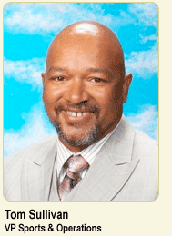

Tom Sullivan
Vice President, Sports & Recreation
Tom Sullivan, vice president of sports & operations, oversees the Club’s building operations, human resources and sports programs.
Sullivan is charter alumnus and 30+ year employee of Mathews-Dickey, who got his start as a member of Knight’s baseball team, Earn & Learn and Summer Day Camp programs. His athletic achievements in baseball earned him induction into the Saint Louis University Billikens Hall of Fame, and his recreational expertise garnered several terms as president of the Junior Football League. He has also been inducted into the Amateur Baseball Hall of Fame and received the Larry Lady Officiating Award from the National Association of Inter-Collegiate Athletics.
Active in his community, Sullivan is a board member of the St. Louis Community Credit Union and trustee of the Life Center International. Sullivan has extensive experience in human resources and building management, conducting needs assessments and overseeing work performed by contractors and employees.